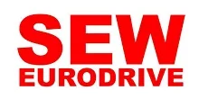

Поставляем оригинальные мотор-редукторы SEW-Eurodrive под заказ — оригинал с гарантией производителя. Нужно дешевле — изготовим аналог собственного производства по присоединительным размерам. Цена и срок поставки — по запросу.
Оригинальные мотор-редукторы и редукторы SEW-Eurodrive — под заказ, с гарантией производителя. Пришлите модель или шильд — сообщим цену и срок поставки. Нужно дешевле — изготовим аналог (см. ниже).
| Серия SEW-Eurodrive | Типоразмеры (поставляем оригинал) |
|---|---|
| R — соосно-цилиндрические | R17, R27, R37, R47, R57, R67, R77, R87, R97, R107, R137, R147, R167 |
| F / FA / FAF — плоские цилиндрические | FA37, FA47, FA57, FA67, FA77, FA87, FA97, FA107, FA127, FA157, FAF127 |
| K / KA — коническо-цилиндрические | KA37, KA47, KA57, KA67, KA77, KA87, KA97, KA107, KA127, KA157, KA187 |
| S — червячно-цилиндрические | S37, S47, S57, S67, S77, S87, S97 |
| W — компактные червячные | WA10, WA20, WA30 |
| Двигатели в сборе | DRN / DRS / DRE 71…180 (напр. R77DRS100LC4, R127DRN180M4, FA47/G DRS100M4) |
Цена и наличие оригинала — по запросу (зависят от модели, курса и срока). Не оферта.
Заменяем мотор-редукторы SEW-Eurodrive на аналоги собственного производства — не только червячные, но и соосные, плоские цилиндрические и конические серии. Под конкретную модель подбираем габаритный аналог: узел встаёт на штатное место по присоединительным и габаритным размерам — переходные фланцы и спецвалы изготавливаем по вашим чертежам.

| Заменяем серии SEW-Eurodrive | WA, FA, R, K, S |
|---|---|
| Мощность двигателя | 0.06–200 кВт |
| Передаточное число | 3.77–23200 |
| Наш аналог | Редукторы серии ZR (червячные, плоские цилиндрические, соосные, конические) |
| Гарантия | 24 месяца |
| Срок | Отгрузка со склада от 3 дней, изготовление от 5 рабочих дней |
Совпадают присоединительные размеры, валы и фланцы — узел встаёт на штатное место.
Вдвое выше среднерыночной.
Отгрузка со склада от 3 дней — не ждать импорт месяцами.
Пришлите фото шильда или модель — подберём аналог за 15 минут.
Подбор по типоразмеру: каждой модели SEW-Eurodrive соответствует наш редуктор серии ZR. Точную замену по вашей модели или шильду подтвердит инженер — пришлите шильд или опишите задачу.
| Модель SEW-Eurodrive | Наш аналог |
|---|---|
| Червячные мотор-редукторы | |
| WA 20 | ZR 604 |
| WA 37 | ZR 605, ZR 606 |
| WA 47 | ZR 607 |
| Плоские цилиндрические мотор-редукторы | |
| FA 37 | ZR 636 |
| FA 47 | ZR 646 |
| FA 57 | ZR 656 |
| FA 67 | ZR 666 |
| FA 77 | ZR 676 |
| FA 87 | ZR 686 |
| FA 97 | ZR 696 |
| FA 107 | ZR 6106 |
| FA 127 | ZR 6126 |
| FA 157 | ZR 6156 |
| Соосные мотор-редукторы | |
| R 37 | ZR 939 |
| R 47 | ZR 949 |
| R 57 | ZR 959 |
| R 67 | ZR 969 |
| R 77 | ZR 979 |
| R 87 | ZR 989 |
| R 97 | ZR 999 |
| R 107 | ZR 9109 |
| R 137 | ZR 9139 |
| R 147 | ZR 9149 |
| R 167 | ZR 9169 |
| Конические мотор-редукторы | |
| K 37 S 37, S 47 | ZR 838 |
| K 47 S 57 | ZR 848 |
| K 57 S 67 | ZR 858 |
| K 67 S 67 | ZR 868 |
| K 77 S 77 | ZR 878 |
| K 87 S 77, S 87 | ZR 888 |
| K 97 S 87, S 97 | ZR 898 |
| K 107 S 97 | ZR 8108 |
| K 127 | ZR 8128 |
| K 157 | ZR 8158 |
| K 167 | ZR 8168 |
| K 187 | ZR 8188 |
Оставьте контакты или пришлите модель/шильд — инженер подберёт аналог, рассчитает присоединительные размеры и пришлёт КП.
Получить КПДа, поставляем оригинальные мотор-редукторы и редукторы SEW-Eurodrive под заказ — с гарантией производителя. Срок зависит от серии, типоразмера и наличия у поставщика: часть позиций отгружаем со склада, остальное везём под заказ. Пришлите модель или шильд — назовём точный срок поставки.
Аналог — это редуктор нашего производства серии ZR с теми же присоединительными и габаритными размерами, что у оригинала SEW-Eurodrive. Узел встаёт на штатное место: совпадают валы, фланцы и монтажные размеры, переходные фланцы и спецвалы при необходимости изготавливаем по чертежам. Отличается ценой и сроком — аналог обычно дешевле и доступен быстрее импорта.
Достаточно прислать обозначение с шильда или фото таблички — по нему видно серию (R — соосные, F/FA — плоские, K/KA — конические, S — червячные), типоразмер, передаточное число и мощность двигателя. Инженер определит и оригинал для поставки, и наш аналог ZR по присоединительным размерам. Если шильда нет — подберём по габаритам и параметрам.
Цена и оригинала, и аналога — по запросу. Стоимость оригинала зависит от модели, курса и срока поставки, цена аналога — от типоразмера и комплектации. Пришлите модель или шильд — рассчитаем оба варианта и пришлём коммерческое предложение.
Габаритный аналог изготавливаем от 3 дней со склада или под заказ. Оригинал SEW-Eurodrive поставляем под заказ — срок зависит от модели и наличия, точные сроки сообщим при запросе.
Да, мотор-редукторы рассчитаны на работу с частотным преобразователем. Сообщите требуемый диапазон регулирования оборотов — подберём двигатель и комплектацию.
Передаём паспорт изделия, сертификаты и закрывающие документы — счёт-фактуру или УПД. Работаем по договору; для постоянных и серийных клиентов согласуем индивидуальные условия.
Да. Для производителей оборудования делаем серийные поставки с резервом на складе и фиксированной ценой по договору — приводная часть вашей серии всегда в наличии.
SEW-Eurodrive — один из самых востребованных брендов приводной техники, и закрыть потребность по нему можно двумя путями: поставкой оригинала под заказ или нашим аналогом дешевле. Если вам нужно SEW купить — поставляем оригинальные SEW Eurodrive с гарантией производителя; если важнее цена и срок — изготовим мотор-редуктор SEW-аналог по присоединительным размерам. Аналог SEW нашего производства встаёт на штатное место без переделки посадки.
Линейка SEW-Eurodrive охватывает серии R (соосно-цилиндрические), F/FA (плоские цилиндрические), K/KA (коническо-цилиндрические), S (червячно-цилиндрические) и W (компактные червячные). Оригинальные узлы этих серий и двигатели DRN/DRS/DRE мы поставляем под заказ — пришлите модель или шильд, и мы сообщим цену и срок поставки. Параллельно по каждому типоразмеру у нас есть аналог серии ZR с совпадающими валами, фланцами и монтажными размерами.
Оригинал берут, когда нужна точная заводская позиция, заводская гарантия или совместимость с уже установленным парком SEW. Аналог выбирают, когда важнее цена и срок: наш редуктор ZR обычно дешевле и доступен быстрее импорта, а по присоединительным размерам он взаимозаменяем. Помочь с выбором и подбором помогут разделы импортозамещение и подбор — инженер подтвердит точную замену по вашей модели или шильду.
| Серии SEW | R, F/FA, K/KA, S, W |
|---|---|
| Поставка | оригинал под заказ + аналог дешевле |
| Цена | по запросу (зависит от модели и срока) |
| Подбор | по модели, шильду, габаритам |